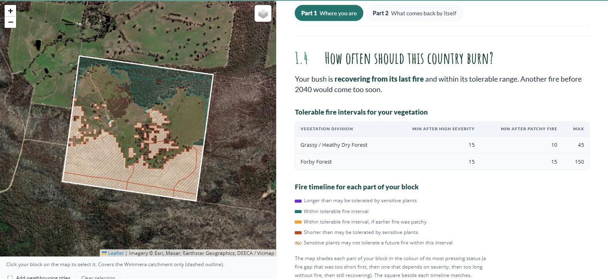
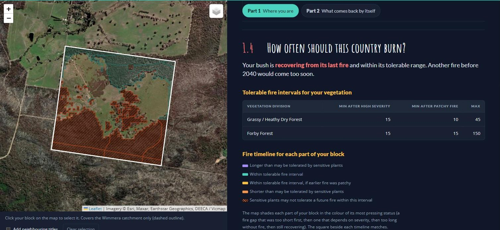
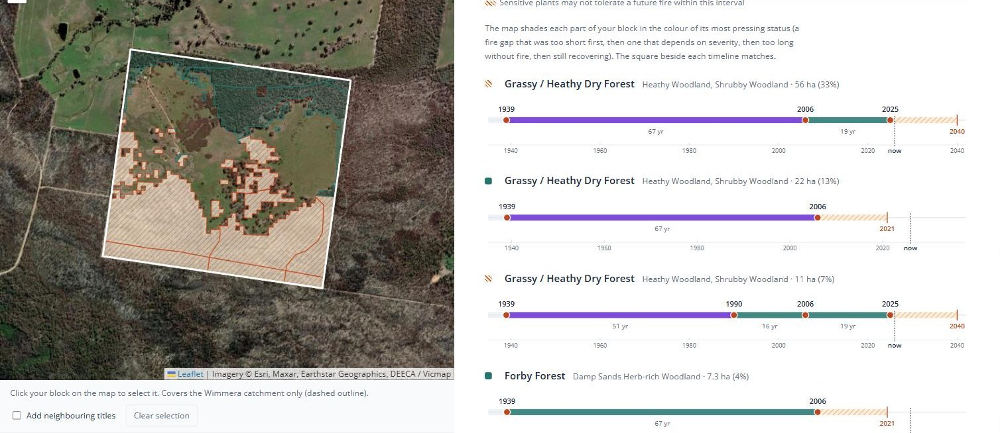
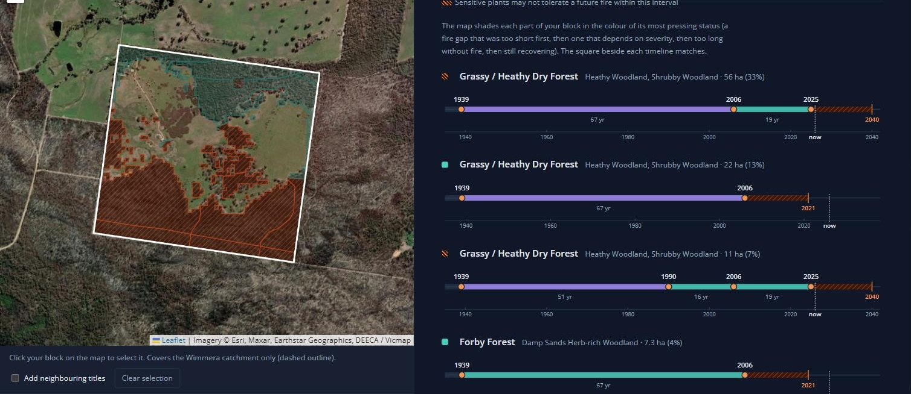

How often should this country burn?
Now we come back to the big question: was this a ‘good fire’ or a ‘bad fire’ for my block?
It’s not so much whether the fire was good or bad, but whether this fire, at this severity, this long after the last one, is something your more sensitive plant species can re-establish after.
Victorian fire ecologists answer this question with two numbers for each fire division: a minimum and a maximum tolerable fire interval.1
The minimum tolerable fire interval
This is the shortest gap between fires a vegetation community can take without losing species. It is set by the plants fire kills outright, which return only from seed: the “obligate seeders”. These include most local peas, wattles, banksias and hakeas. A seeder must grow, flower, and build a seed store before the next fire. If fire returns first, there is no seed left and the species is gone from that patch.1
There are two minimums, because severity matters as much as timing:1
- After a high-severity fire — crowns burnt, few unburnt patches — more of the existing seed bank may have been destroyed, and there are fewer surviving plants. It takes much longer for the seed bank to build back up.
- After a low-severity, patchy fire — canopy largely intact, plenty of unburnt islands — the minimum tolerable fire interval is shorter. Sensitive species may have survived in the unburnt patches, where the seed bank and new seed were left untouched. These patches carry them through while they regrow from seed in the burnt ground.1
This means an unburnt patch in the middle of your block is worth protecting well out of proportion to its size.
The maximum tolerable fire interval
This is the longest a community can go without fire before it starts to lose the species that rely on fire to grow and reproduce.1 Grasslands that go too long without fire can be choked out by their own tussocks and lose their herbs. Some species won’t germinate until smoke or heat triggers them. A long absence of fire is not automatically a good outcome.
| Vegetation division | Typical EVCs | Min after high severity | Min after patchy fire | Max |
|---|---|---|---|---|
| Grassy / Heathy Dry Forest | Heathy Woodland, Shrubby Woodland, Grassy Dry Forest, Heathy Dry Forest | 15 | 10 | 45 |
| Forby Forest | Damp Sands Herb-rich Woodland, Grassy Woodland | 15 | 15 | 150 |
| Inland Plains Woodland | Plains Grassy Woodland, Alluvial Terraces Herb-rich Woodland | 30 | 5 | 150 |
| Treed Swampy Wetland | Red Gum Swamp | 30 | 20 | 150 |
| Basalt Grassland | Plains Grassland | 3 | 2 | 7 |
Where these numbers come from
A vegetation type contains a hundred or more plant species, but of those there may only be ten to fifteen that are sensitive to fire coming either too soon or not soon enough. Those species, called key fire response species, are what set the minimum and the maximum. Everything else in the community can tolerate a wider range.21
You can put even more confidence in these estimates once you have confirmed which of those key fire response species grow on your block. We will come to that in Part 2.
For example, Grassy / Heathy Dry Forest is the most widespread fire division in the Grampians foothills. It recovers fast and much of its regeneration is fire-cued. It is generally healthiest when fires come no sooner than 15 years apart and no more than 45. But large parts of the Grampians National Park have now been burnt severely twice inside fifteen years, which is when the risk grows of its seeders beginning to drop out. After the 2006 Mt Lubra fire, Grampians Rice-flower took two years to first flower and Grampians Bitter-pea took three. Flowering is just the first step: from there they need to set seed, and repeat that over enough seasons to build up a large enough seed bank before the next fire.3
In the Wimmera Bushfire Ecology Lookup Tool, section 1.4, How often should this country burn?, gives you an estimate of your own block’s relationship to fire. It opens with a one-line verdict, then the tolerable fire intervals that likely apply to your block, then a fire timeline for each part of your block with its own fire history.




The verdict for the example block: “Your bush is recovering from its last fire and within its tolerable range. Another fire before 2040 would come too soon.”
Underneath, the tool draws a fire timeline for each part of the block with its own fire history. The dots are fires, and the bar between two dots is the gap between them, coloured by the verdict on that gap: teal, within the tolerable interval; amber, within it only if the earlier fire was patchy; orange-red, shorter than sensitive plants may tolerate; purple, longer than they may tolerate. The hatched stretch after the last fire is the time the seeders need to rebuild, ending in the first year another fire would clear the minimum. The square beside each timeline, and that part of the block on the map, take the colour of its most pressing status.
The example block splits into four parts:
- 56 hectares of Grassy / Heathy Dry Forest (Heathy and Shrubby Woodland) burnt in 1939, 2006 and 2025. The 19-year gap from 2006 to 2025 clears the 15-year minimum, but not by much. The 67 years before that shows purple: longer than the 45-year maximum, which is its own kind of signal. It is still recovering, and another fire before 2040 would come too soon.
- 11 hectares of the same division also caught the 1990 planned burn, so its gaps run 51, 16 and 19 years. Same verdict: recovering until 2040.
- 22 hectares escaped the 2025 fire. Last burnt in 2006, it cleared its minimum in 2021 and is now within its tolerable range.
- 7 hectares of Damp Sands Herb-rich Woodland (Forby Forest) also escaped in 2025. Its 67-year gap is well inside Forby Forest’s 150-year maximum.
The 2040 date assumes the 2025 fire was severe, because the record doesn’t say; where severity isn’t known, the tool always assumes the worse case. If the landholder sets it to patchy in section 1.3, the minimum drops to 10 years and 2040 becomes 2035.
All five rows check out against the primary source: they match Table 2.5 of Cheal (2010) exactly. The key fire response species for our divisions are not in that report (they sit in a database, not the published tables), so this section explains the idea without naming them.
The sentence that large parts of the Grampians National Park have burnt severely twice inside fifteen years needs a source: Pauline Rudolph’s fire history slides, or a count from the state fire layers.
Link the maximum tolerable fire interval paragraph to the Project Platypus page on chocolate lilies (URL to come from Elia).
Should Sands Heathland and Shallow Sands Woodland be added for the Little Desert?